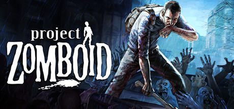

Welcome to the Project Zomboid Page
Project Zomboid is the ultimate in zombie survival.
Alone or in MP: you loot, build, craft, fight, farm and fish in a struggle to survive.
A hardcore RPG skillset, a vast map, massively customisable sandbox
and a cute tutorial raccoon await the unwary.
So how will you die? All it takes is a bite..
